Lab3
Task1 设置网络
首先，以下是我的容器情况:
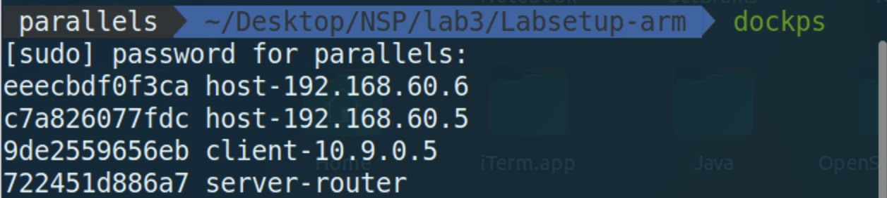
通过 dockps 命令可以看到我们已经开启了容器情况,紧接着我们需要开始完成任务:
任务1.1 测试主机 U 可以与 VPN Server 通信
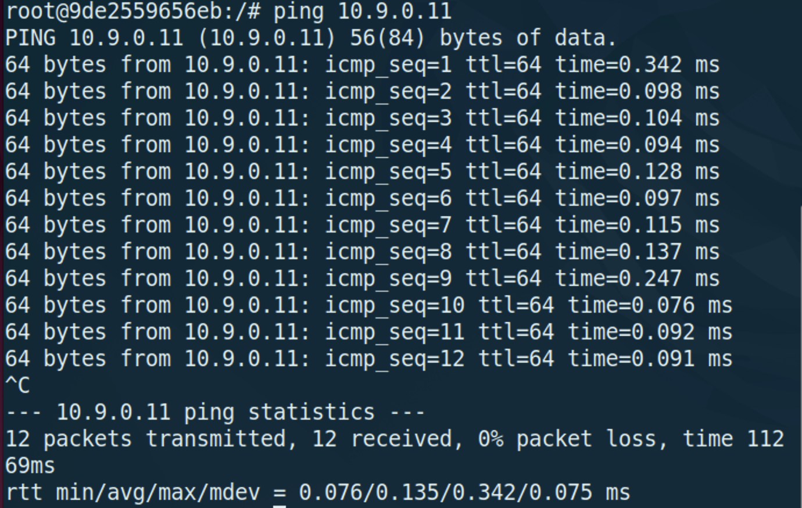
我们通过 ping 10.9.0.11 发现联通了
任务1.2 测试 VPN Server 可以与主机 V 通信
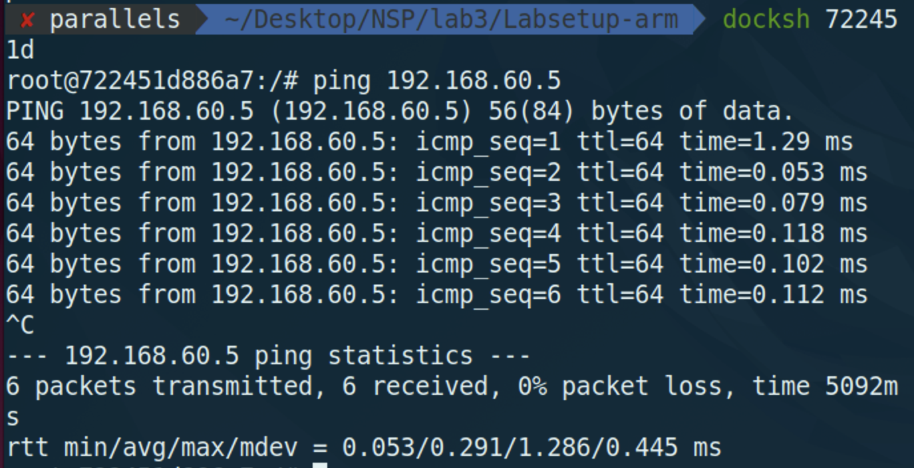
我们通过在 Router 上进行 ping 192.168.60.5 发现成功的联通了。
任务1.3 测试主机 U 应该不能与主机 V 通信
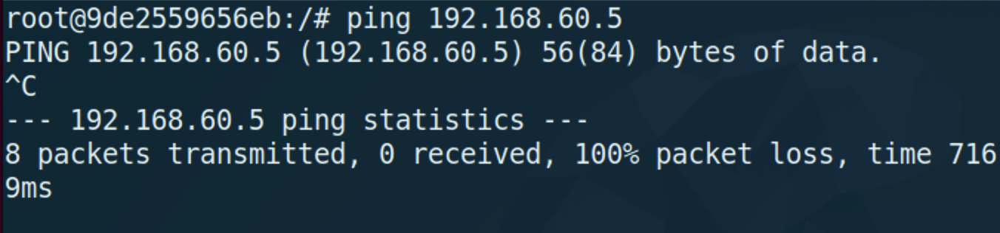
我们在主机U 中发现了如果对主机 V 进行ping 192.168.60.5 是无法ping通的。100% packet loss
任务1.4 在路由器上运行 tcpdump,并嗅探每个网络流量以测试你是否可以捕获流量包。
首先，我们进入 Router 这个容器，利用ip address 命令查看一下当前的网络情况：
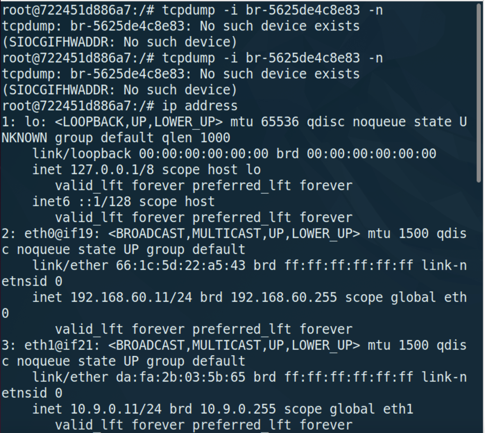
我们发现 Router 位于三个接口:
loeth0@if19eth1@if21
下面我们测试 eth1 这个接口，也就是位于 10.9.0.0/24 这个子网的接口。我在 Client 对 Router 发起ping,发现成功的捕获到了，结果如下:
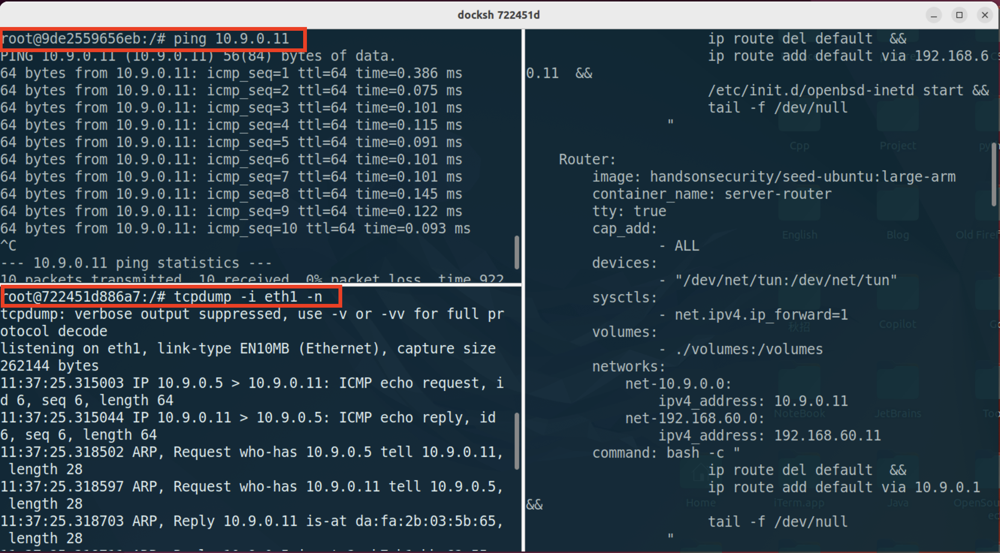
测试完 eth0 接口结果也是一样的，可以捕获到数据包，就不再贴了。
Task2 创建和配置 TUN 接口
先介绍一下 TUN/TAP 接口目的是进行创建虚拟网络接口的技术，而 TUN 接口是模拟网络层设备，针对的是网络第三层数据包
Task2.a 接口名称
这个实验的目的是为了熟悉 TUN 技术，我们的实验提供了一个 tun.py 程序。
首先，我们测试这个程序是否能够正常的运行:
- 我们在主机
U执行这个程序 - 另外开启一个终端，进行
ip address命令观察网络接口情况:
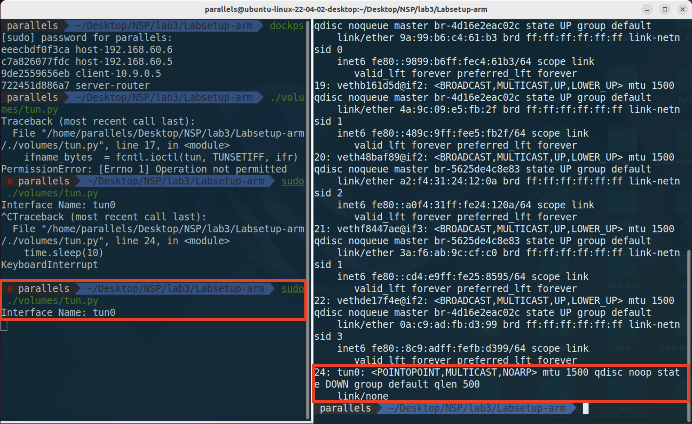
我们观察上图，是发现了存在了一个名为 tun0 的接口。
接下来，我们通过更改 tun.py 中的 TUN_NAME 来进行一个接口名称的更改。我们将其改为 zhou，然后重新运行这个程序:
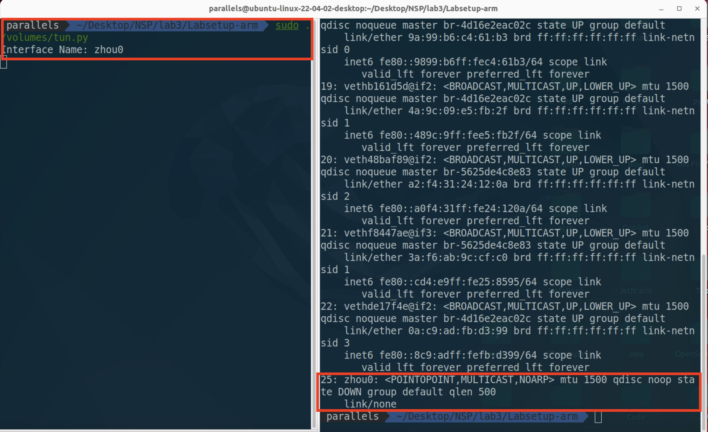
如上图，已经成功的更改了接口名称了为 zhou0 (我姓周)
Task2.b 设置 TUN 接口
我们在代码中添加了两行系统调用:
1 2 | |
目的是为了给 TUN 接口分配一个 IP 地址，同时还需要打开这个接口。下面我们观察实验结果:
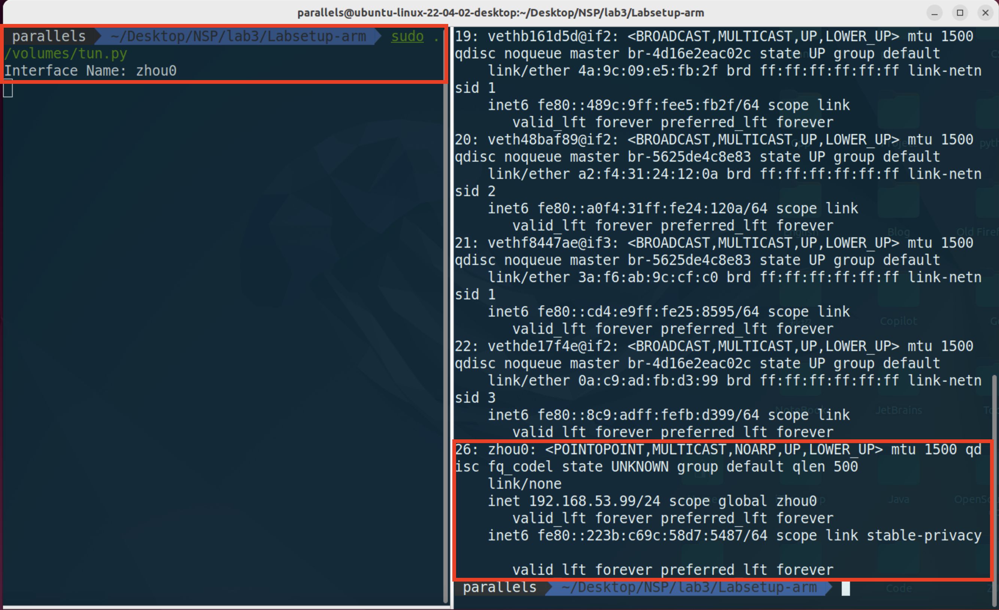
对比上图没有加入两行系统调用的时候，我们可以发现当前的情况其实就是接口被激活了。
ip addr add 192.168.53.99/24 dev 目的就是进行给这个接口分配一个 IP 地址,同时我们 ip link set dev {} up 激活这个接口使其可以收发数据。
Task2.c 从TUN 接口读取数据包
任务a
我们在主机 U 上进行 ping 192.168.53.5 发现了从 192.168.53.99 发送了echo 请求。但是没有接收到 echo 响应。说明我们已经成功的通过 TUN 接口发送出去了，但是因为不存在192.168.53.5 这个主机，所以没有接收到 echo 响应。
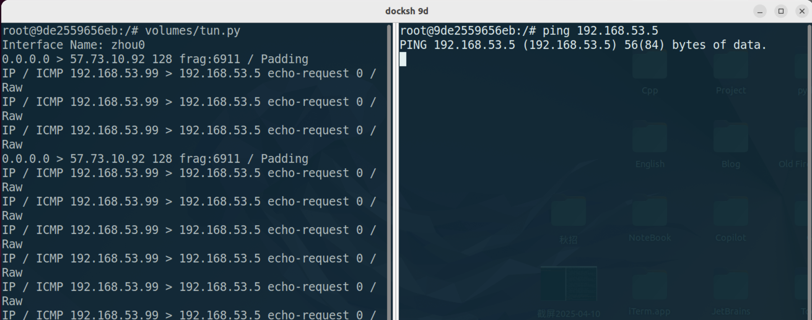
任务b
我们在主机 U 上进行 ping 192.168.60.5 发现无事发生，因为没有经过 TUN 这个接口发出。因此也不会监听到任何数据包了。
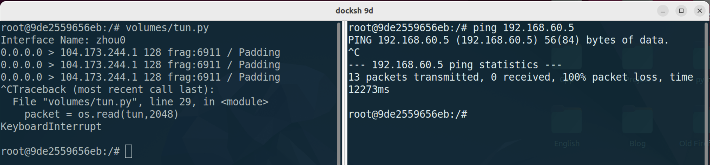
Task2.d 将数据包写入 TUN 接口
更改1
下面是我的代码:
1 2 3 4 5 6 7 8 9 10 11 12 13 14 15 | |
主要的逻辑就是，如果 TUN 接口接受到了数据包，那么就进行一个IP包的解析，并且进行一个回应。我通过日志的办法来进行判断是否已经完成了这个过程。具体的结果如下:
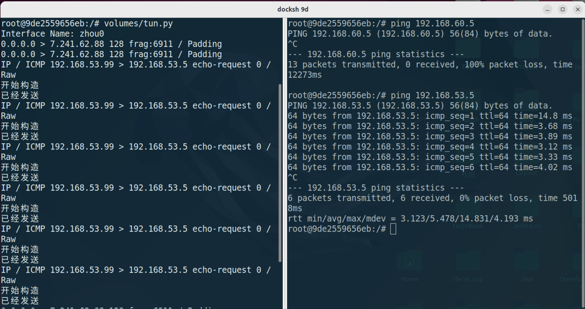
更改2 我们将任意的数据写入接口
1 2 3 4 5 6 7 | |
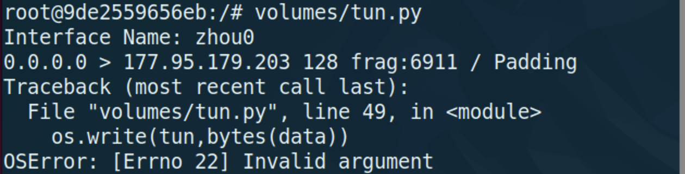
我们能发现的是，直接输入 data 是不合法的，因为没有合法的 IP数据包
Task3 通过隧道将IP数据包发送至VPN服务器
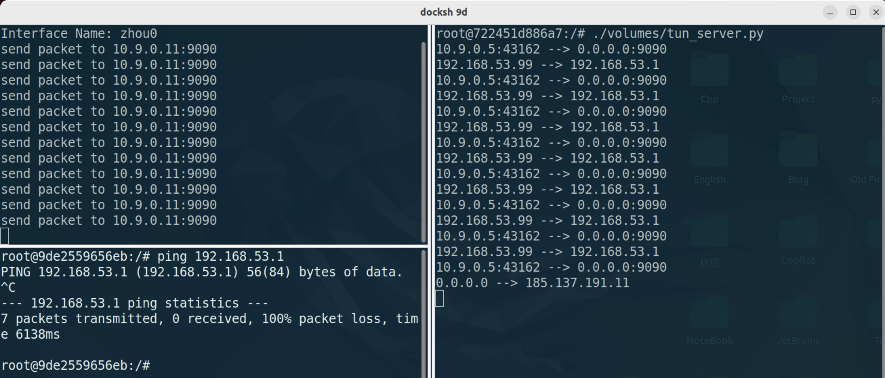
首先，我们按照实验报告上的，在完成实现了 tun_client.py 和 tun_server.py 之后，在 client 进行 ping 192.168.53.1 也就是对当前子网中的某个主机进行 ping 操作。上图就是我们获得的结果。
我们发现 package 本来应该是会被发送到 192.168.53.1 这个主机的，但是由于 TUN 接口的缘故，被通过隧道，发送至了 Server,也就是 10.9.0.11:9090.被捕获了，然后也通过日志的形式打印出来了。
子任务 我们刚刚对 Client 的子网中的主机进行了 ping 操作，并且被捕获到了。紧接着，我们开始对 VPN 中的主机进行 ping 操作。发现失败了，无法被捕获。这个原因是因为我们的 client 作用是将数据包通过隧道发送到 10.9.0.11:9090 这个主机和端口，也就是 server 的位置。但是由于 ping 的主机并非在我们client 的子网中。所以无法被捕获到。这个时候，我们通过
1 | |
以上的命令行，将我们应该去往192.168.60.0/24 这个子网的数据包被路由到 TUN 接口并且发送给server 中。我们尝试一下:
这个是未添加到 路由表 的情况:
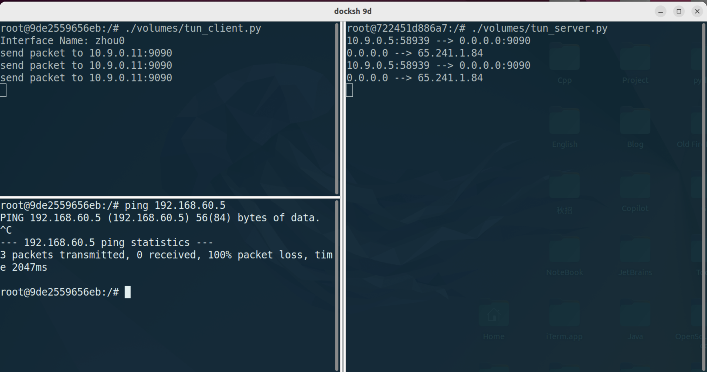
这个是已经添加到 路由表 的情况:
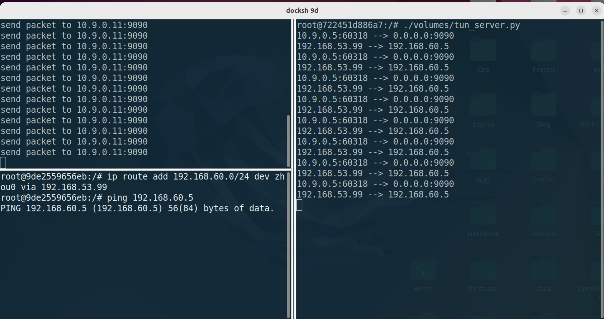
我们可以看到上图是有一行为 192.168.53.99 --> 192.168.60.5 就是通过 隧道 到达的。
Task4 设置 VPN 服务器
我们此时的 server 是已经捕获到了数据包，但是没有对其进行处理。当前我们需要将数据包提供给内核，以便内核可以将数据包路由到最终的目的地。此时依旧需要一个 TUN 接口来进行完成。
下面是我的代码实现:
1 2 3 4 5 6 7 8 9 10 11 12 13 14 15 16 17 18 19 20 21 22 23 24 25 26 27 28 29 30 31 32 33 34 35 36 37 38 39 40 41 | |
这个是我设置完 TUN 接口之后的情况:
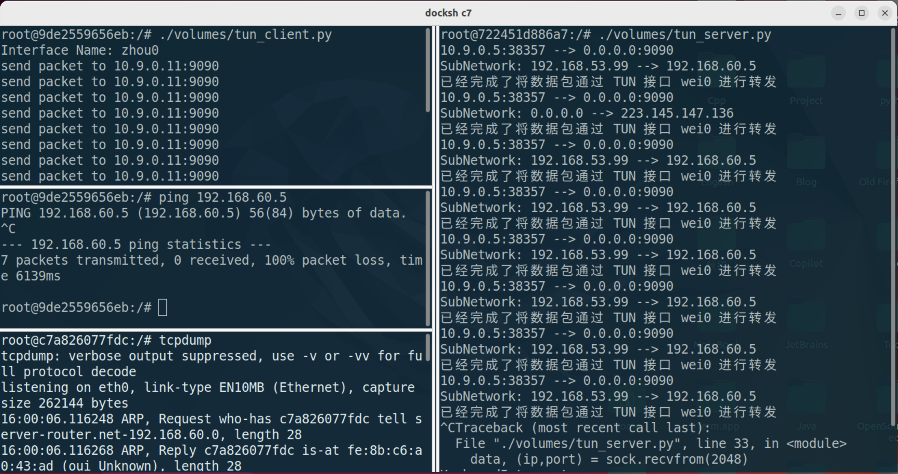
我们可以看见已经成功的发送到了 192.168.60.5 这个主机了。其实就是我们刚刚的 server 充当一个 UDP 服务器，然后进行启动了一个 TUN 接口，将IP转发到我们子网中的主机 V.
Task5 处理双向流量
我们上述的四个步骤，主要是完成了一个单向的 IP隧道 的建立。但是没有完成对于 reply 的处理。
这个是我对于 tun_client.py 的修改:
1 2 3 4 5 6 7 8 9 10 11 12 13 14 15 16 17 18 | |
因为我们现在要实现双向的流量，那么在 fd 中其实分为两种，我们只需要处理从隧道中获得的 sock 数据包，以及从 tun 接口中获得的 packet 数据包。我们只需要将其进行一个转发即可。
这个是我对于 tun_server.py 的修改:
1 2 3 4 5 6 7 8 9 10 11 12 13 14 15 16 17 18 19 20 21 22 23 24 25 26 27 28 29 30 31 32 33 34 35 36 37 38 39 40 41 42 43 44 45 46 47 48 49 50 51 52 53 54 | |
主要就是对于 server 进行一个 tun 接口的激活，并且一个和 client 的类似处理。但是我一开始只修改了while 部分，忘记进行了路由表的转发了:
1 | |
在正确的完成实现了之后，结果如下:
这个是进行 ping 192.168.60.5 操作
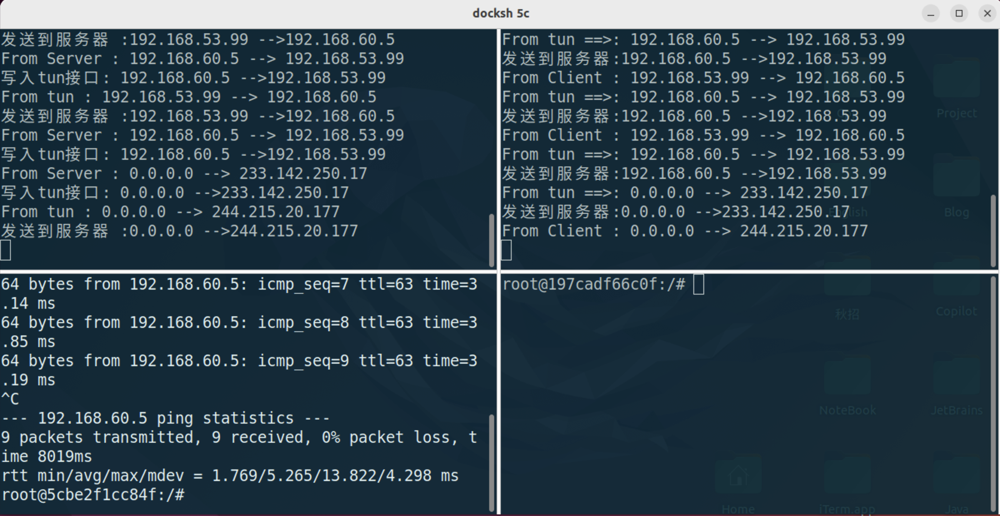
接着进行 telnet 192.168.60.5
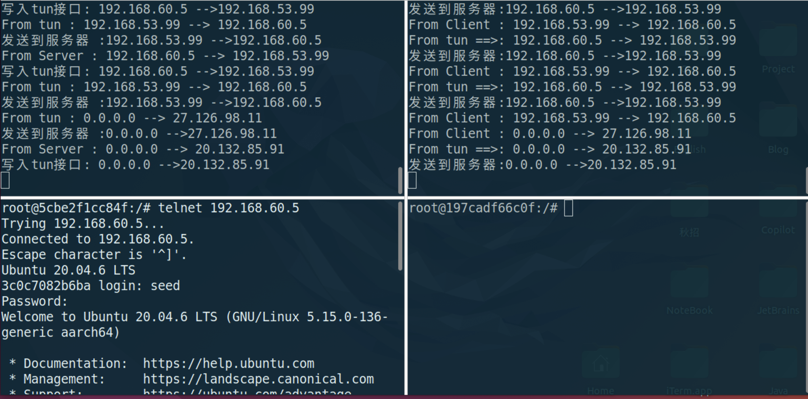
我们发现已经可以成功进行了 telnet 连接了。
数据包如何流动的?
- Step1 : 我们在主机
U进行了ping 192.168.60.5操作，测试连通性，此时会发送一个echo request的请求。 - Step2 : 这个数据包会被
tun_client.py中的tun(192.168.53.99)接口捕获到，并且进行一个解析。 - Step3 : 因为我们进行了增加路由的操作，那么这个数据包会被路由到
tun_client.py中的sock中，并且发送到server(192.168.54.99)中。 - Step4 :
server中的sock接口会捕获到这个数据包，并且进行一个解析。 - Step5 :
server中的tun接口会捕获到这个数据包，并且进行一个解析。 - Step6 : 主机
V接受到了这个数据包，并且进行一个echo reply的回应。 - Step7 :
server中的tun接口会捕获到这个数据包，并且进行一个解析。 - Step8 :
server中的sock接口会捕获到这个数据包，并且进行一个解析。 - Step9 :
client中的sock接口会捕获到这个数据包，并且进行一个解析。 - Step10 :
client中的tun接口会捕获到这个数据包，并且进行一个解析。 - Step11 : 主机
V接受到了，此刻说明联通了。
Task6 隧道中断实验
我们发现，在成功连接上的时候(也就是 tun_client.py 和 tun_server.py 同时启动的时候)，我们可以正常的进行telnet 操作。我们可以进入 主机V 的交互界面。但是我们在关闭了 tun_client.py 之后，我这个交互界面就直接无响应了。我的echo 1 命令也无法执行。于是我重新打开了tun_client.py 之后，发现我刚刚为了让命令完成按的很多个回车指令，都一一回显了。结果如下图(左下角就是我的 telnet 界面)
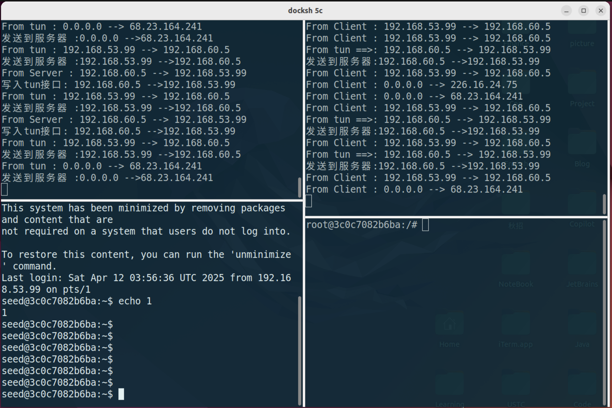
Task7 主机V 上的路由实验
首先，我们先检查默认的路由情况
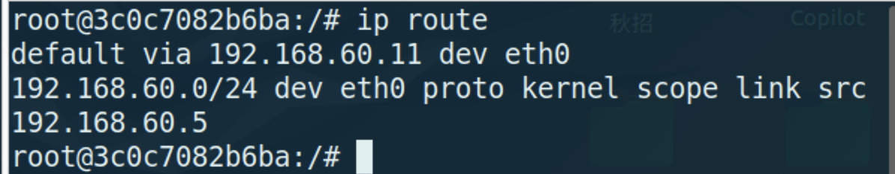
去往任何目的地的数据包，除了 192.168.60.0/24 网络，都将被自动路由到 192.168.60.11 这个网关。
我们进行删除 ip route del default
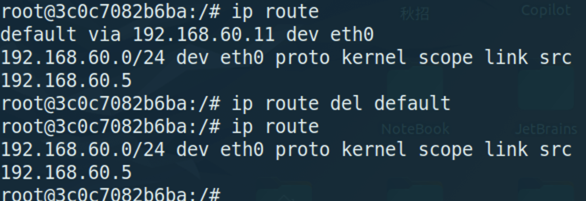
发现已经被删除了默认的路由。如果 目标IP 处于 192.168.60.0/24 网络内，就正常发送。否则无法正常的发送出去。
我们进行添加具体的条目:
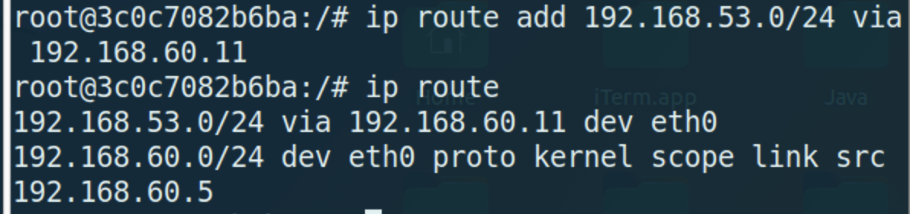
添加具体条目之后，我们可以正常的 ping 192.168.60.5
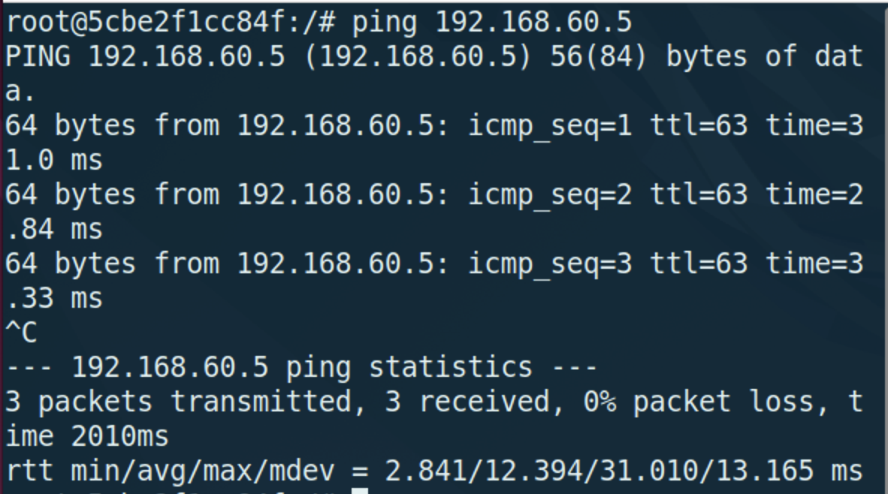
Task8: 专用网络之间的 VPN
这个实验，我们需要关闭 docker-compose.yml 构建的 VPN 网络，而选择使用 docker-compose2.yml 进行构建。
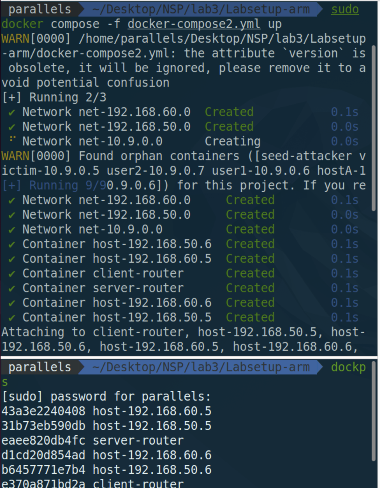
我们观察上图，发现已经构建成功了，存在三个网络:
10.9.0.0，192.168.50.0,192.168.60.0
接下来我们进行专用网络 VPN 的实验。
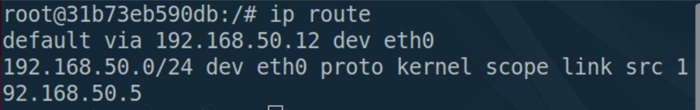
我们看到了 192.168.50.5 的路由表是默认设置了将去往 192.168.60.0 网络的数据包都先路由至 192.168.50.12
在没有更改 tun_client.py 和 tun_server.py 之前，我们是无法进行 ping 通的:
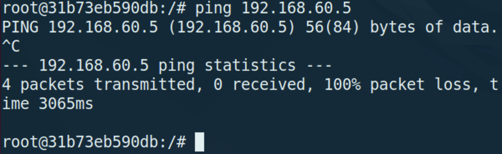
我们进行了如下的更改:
1 2 3 4 5 6 7 8 9 | |
主要就是对 tun 接口的 ip 进行更改，以及对路由表进行添加即可。
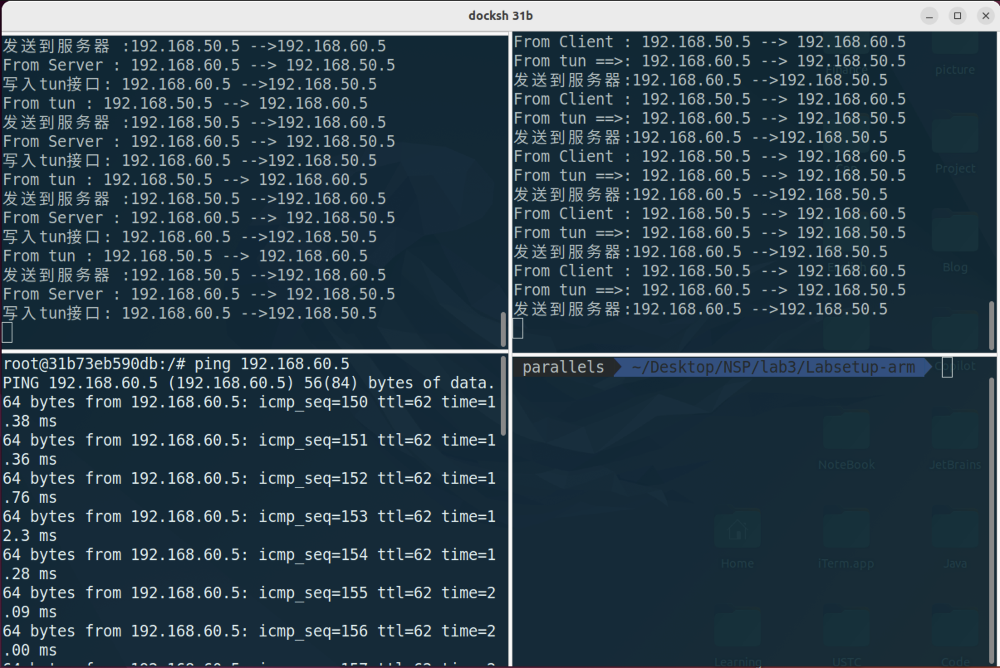
我们发现已经成功的 ping 成功了。因为我们已经成功的连接起了TUN 接口形成隧道了。
Task9 用 TAP 接口实验
TAP 接口和 TUN 接口的区别就是，TAP 接口针对的是MAC层挂接。而后者是 IP 层的挂接。
我们重新进行使用 docker-compose.yml 的实验环境
1 2 3 4 5 6 7 8 9 10 11 12 13 14 15 16 17 18 19 20 21 22 23 24 25 26 27 28 29 30 31 32 33 34 35 36 37 38 39 40 41 | |
上面是我的 tap_client.py 的代码实现
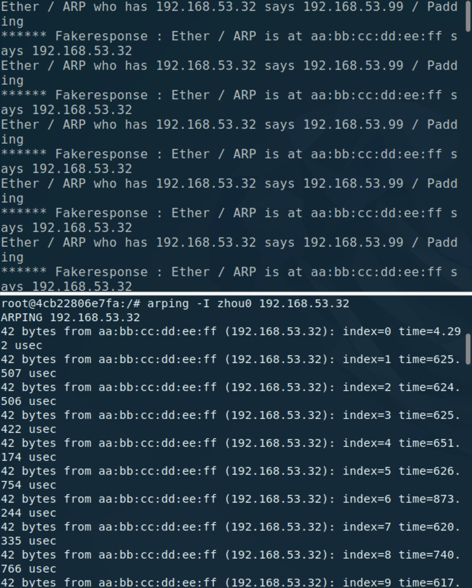
我们已经成功的创建了一个 tap 接口，然后在 10.9.0.5 对一个不存在的主机进行 ping 操作。我们发现已经成功的捕获到了数据包，并且进行一个伪造的回应。
接着，我们对 1.2.3.4 进行一个 arping 操作，发现依旧可以得到回复:
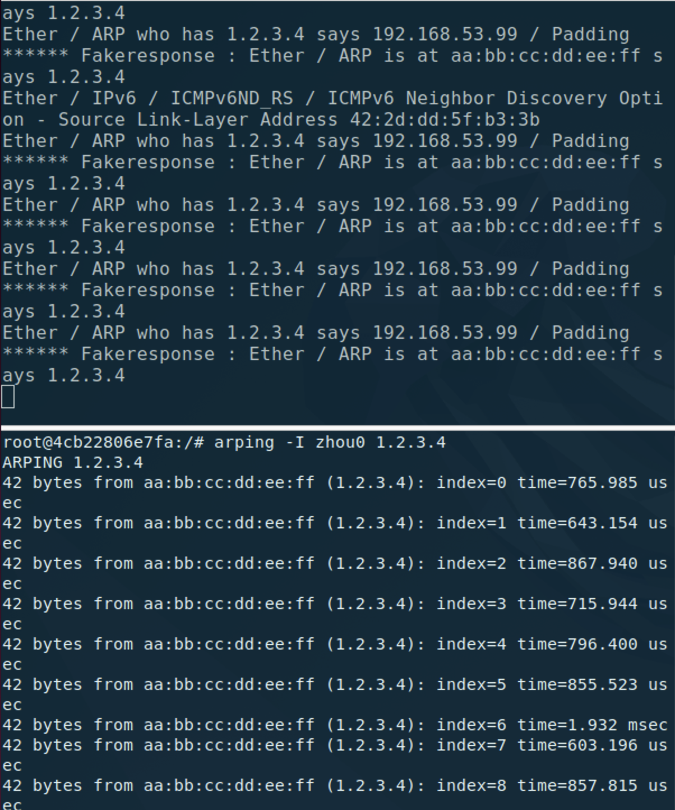